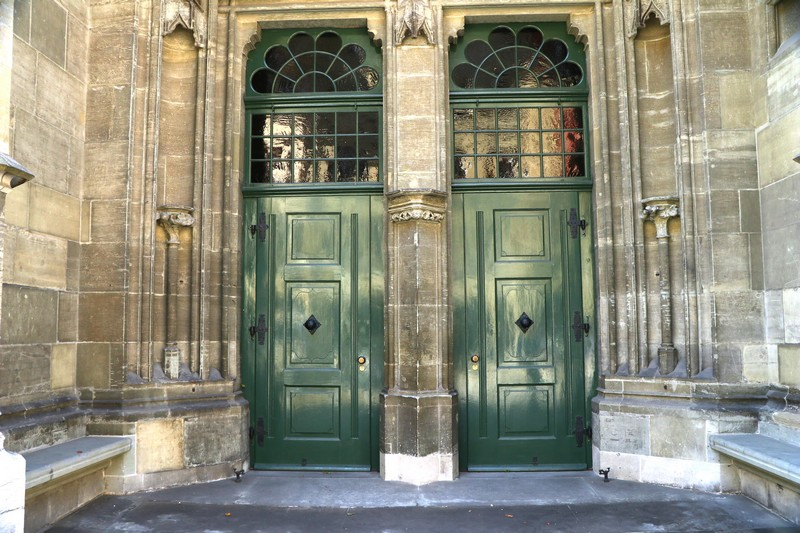

Spaziert man durch die Münstergasse, übersieht man sie leicht, die beiden unscheinbaren grünen Türen an der Nordwestseite des Berner Münsters. Die beiden einflügeligen Türen sind unter einem schlichten Gewölbe verborgen und etwas nach hinten versetzt. Neben den pompösen Hauptportalen wirken sie schnörkellos und unspektakulär. Bunte Figuren oder gar goldene Verzierungen sucht man vergeblich. Doch ihre Einfachheit sollte nicht über die wichtige kommunale Aufgabe, die sie einst erfüllten, hinwegtäuschen.
Aufnahme der Hebammenpforte des Berner Münsters. (Bild: Adrienne Grossenbacher)
Wozu es die Hebammenpforte brauchte
Dieser Seiteneingang des Berner Münsters war zu jeder Tages- und Nachtzeit geöffnet. Er wurde von Hebammen verwendet, um schwachen oder kranken Neugeborenen schnell zu einer Nottaufe zu verhelfen. Ab dem 13. Jahrhundert hatte es sich etabliert, dass Neugeborene so schnell wie möglich getauft wurden. Zuvor hatten Taufen nur zu einigen bestimmten Daten im Jahr stattgefunden (wie beispielsweise in der Osternacht). Zudem begann man Babys in gesundheitlich kritischem Zustand einer Nottaufe zu unterziehen. Dies geschah im Glauben, dass tote ungetaufte Säuglinge ansonsten in der Vorhölle (Limbus) landen würden.
Mittelalter in Bern
Als das Hebammentor während der Erweiterung des Münsters im 15. Jahrhundert erbaut wurde, hatte die katholische Kirche in der Stadt Bern eine sehr hohe Machtposition (was bis zur Reformation Berns im 16. Jahrhundert auch so blieb). Denn die Angst nach dem Ableben in der Hölle zu landen, begleitete die Stadtbevölkerung tagtäglich und prägte ihren Alltag massgeblich. Im Spätmittelalter war die Geburtenrate in Bern sehr hoch; die Zunahme der Stadtbevölkerung von 1300 bis 1450 um 2'000 Einwohner erfolgte jedoch hauptsächlich durch Migration. Dies lässt darauf zurückschliessen, dass die Sterblichkeitsrate relativ hoch war, da sich kaum ein Geburtenüberschuss einstellte. Die Stadt beherbergte neben einigen Adelsfamilien und wohlhabenden Bürgern auch eine Vielzahl an Handwerkern und viele Arme. Auch dies muss eine Auswirkung auf die Sterblichkeit der Neugeborenen und damit auf den Gebrauch der Hebammenpforte gehabt haben.
Die Aufgaben der Hebamme: zwischen Geburtshilfe und Nottaufe
Im Mittelalter war die Geburtshilfe rein den Frauen überlassen. Sie wurden teilweise von der Kirche überwacht, da sie mit den Taufen einen wichtigen Beitrag zum spirituellen Alltag lieferten. Deswegen standen die Hebammen oft unter kritischer Beobachtung der Kirche. Beispielsweise standen sie oftmals unter Verdacht, sich zu wenig um den Glauben und zu stark um die Wissenschaft zu kümmern. Im Mittelalter wurden immer wieder Hebammen als Hexen verfolgt und auf dem Scheiterhaufen verbrannt. Es herrschte der Glaube, dass sie auf eine Verführung durch den Teufel leicht anzusprechen seien. Zu den Aufgaben einer Hebamme gehörte zu der damaligen Zeit nicht nur die Hilfe während der Geburt, ihr wurde auch die wichtige Aufgabe der Nottaufe überlassen. Gelang es den Hebammen nicht, die Kinder rechtzeitig zu taufen, wurden die toten Kinder oftmals am Rand des Kirchenschiffes des Münsters unter den Wasserspeiern begraben. Das Wasser, welches auf das Kirchendach auftraf und durch die unterschiedlichen kuriosen Figuren abfloss und damit die Gräber benetzte, sollte die Aufgabe der Taufe erfüllen. Einige ungetaufte Kinder wurden jedoch auch an Wahlfahrtsorten begraben. Ein solcher liegt auch in Oberbüren im Kanton Bern (weitere Informationen).Dort wurden ungefähr 2'000 Totgeborene oder vor der Nottaufe verstorbenen Kinder begraben. Zuvor wurden sie mit Kohle erwärmt, zudem wurde ihnen eine Feder auf den Mund gelegt und sobald sich diese zufälligerweise bewegte, wurde das Kind als lebendig befunden und getauft. Anschliessend wurde es erneut für tot erklärt und beigesetzt. Nebst dem, dass die Hebammen sterbende Kinder zu der Kirche tragen mussten, hatten sie unter anderem auch die Aufgabe, Kinder noch im Mutterleib einer Taufe zu unterziehen. Dabei wurde eine sogenannte Taufspritze verwendet, welche das Benetzen des noch ungeborenen Kindes möglich machen sollte. Die Nottaufe war für die Familien der sterbenden Neugeborenen sehr wichtig, da sie sonst aufgrund der Erbsünde in der Vorhölle (Limbus) landen würden. Die Entstehung der Erbsünde geht nach der kirchlichen Lehre auf Adam zurück. Durch den Verzehr der verbotenen Frucht verhielt er sich ungehorsam und hielt sich nicht an Gottes Gebot, er beging eine Sünde. Diese wird im Geschlechtsakt weitervererbt, so dass jedes Neugeborene sie in sich trägt und nur durch die Taufe von der gerechten Strafe für diese Sünde befreit werden kann. Dies bedeutet, dass jedes ungetaufte Kind immer noch die Schuld Adams in sich trägt und somit in der Hölle landen würde. Dadurch gab es nach damaligem Glauben für die ungetauften Kinder keine Möglichkeit in das Paradies einzutreten. Anders als bis in die Antike, dachte man im Mittelalter nicht mehr, dass sie in der Hölle landen würden. Im Limbus müssen die Neugeborenen nicht durch das Fegfeuer, keine Schmerzen oder Traurigkeit erfahren. Sogar ein Gefühl der Glückseligkeit soll ihnen zuteil geworden sein. Die Hebammenpforte erfüllte somit im Mittelalter die wichtige Aufgabe, den verstorbenen Kleinkindern den Eintritt ins Paradies zu ermöglichen.
Die Hebammenpforte heute
Im Jahr 1421 wurde der Grundstein zur Erweiterung des Berner Münsters gelegt. Es handelte sich um die dritte Kirche, welche an derselben Stelle in der Stadt Bern erbaut wurde. Während dieses Ausbaus entstand auch die Hebammenpforte. Während der Restaurationsarbeiten 2001/2002 wurde sie renoviert, wobei der Fokus auf dem Erhalt der ursprünglichen Form lag. Sie hat sich daher in ihrer Erscheinung nur wenig verändert. Schaut man genau hin, sieht man, dass der Eingang wohl mit Statuen verziert war, doch heute sind die drei Sockel leer. Es könnte sich dabei um Heiligenfiguren gehandelt haben, welche während des Bildersturms entfernt wurden. Für die Idee der Vorhölle gibt es keine Grundlage in der Bibel. 2007 wurde in der katholischen Kirche der Limbus nach Geheiss des damaligen Papstes Benedikt XVI als überholt erklärt und abgeschafft. Nottaufen finden in der katholischen Kirche auch heute noch statt, während sie in der protestantischen nicht mehr gebräuchlich sind. Eilt man also an diesem unscheinbaren Portal des Berner Münsters vorbei, kann man sich die hastigen Schritte der Hebammen und das flache Atmen der sterbenden Kindern vorstellen, welche zu hören waren, bevor sich die Pforte hinter der Gestalt schloss. Viele traurige Schicksale, für welche die Schwelle und der dahinter liegende Taufstein eine entscheidende Rolle spielten.
Adrienne Shannon Grossenbacher ist Medizinstudentin im zweiten Studienjahr an der Universität Bern (2019).
Weitere Artikel von {{ author.author }} finden Sie hier:
Zur Vertiefung:
- Hubschmid, Tedy: «Zwei wenig beachtete Eingänge ins Berner Münster», in: Zeitschrift der Quartiervertretung Stadtteil 4,10. Jahrgang, Nr. 38, März (2005), vefügbar unter: https://www.quavier.ch(20.06.2019).
- Pahud de Mortanges, Elke: «Der versperrte Himmel: das Phänomen der sanctuaires à répit aus theologiegeschichtlicher Perspektive», in: Schweizerische Zeitschrift für Religions- und Kulturgeschichte = Revue suisse d'histoire religieuse et culturelle = Rivista svizzera di storia religiosa e culturale, Bd, 98 (2004), verfügbar unter: https://www.e-periodica.ch (20.06.2019).
- Dubler, Anne-Marie / Grütter, Hans / Zahnd, Urs / Junker, Beat / Fritsche, Bruno / Kuert, Alfred: Art. Bern (Gemeinde), Historisches Lexikon der Schweiz, 2016, verfügbar unter: https://hls-dhs-dss.ch (20.06.2019).
- Stalder, Birgit: Bern im Mittelalter und im Übergang zur Frühen Neuzeit, Berner Münster-Stiftung, verfügbar unter: http://www.bernermuensterstiftung.ch (20.06.2019).
- Ackerknecht, Erwin H.: «Zur Geschichte der Hebammen», in: Gesnerus: Swiss Journal of the history of medicine and sciences Bd. 31, Heft 3–4 (1974), verfübar unter: https://www.e-periodica.ch (20.06.2019).
- Schwyzer, Pius: «Kindertod, Mütterleid und ewige Seligkeit», in: Heimatkunde Wiggertal, Bd. 70 (2013) https://www.e-periodica.ch (20.06.2019).
- Lindenhofer, Petra: «Traufkinder» – Ein besonderer Umgang mit ungetauft verstorbenen Kindern in der Frühen Neuzeit, Diplomarbeit, Universität Wien, 2012, verfügbar unter: http://othes.univie.ac.at (20.06.20219).